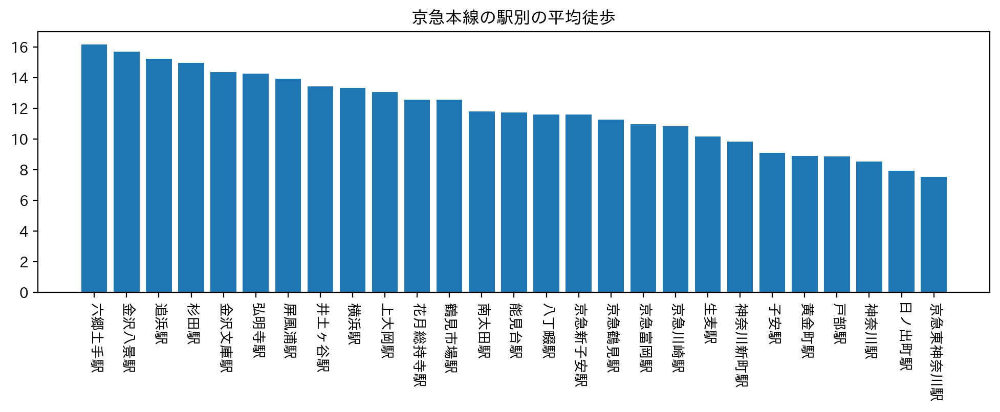
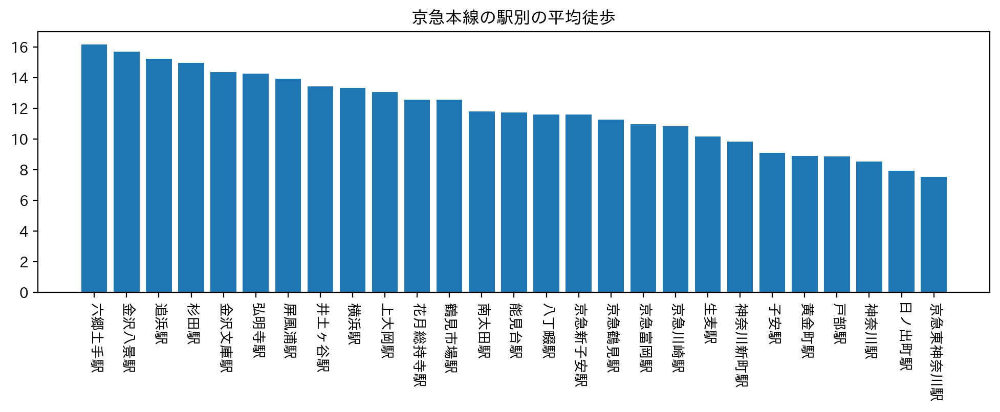
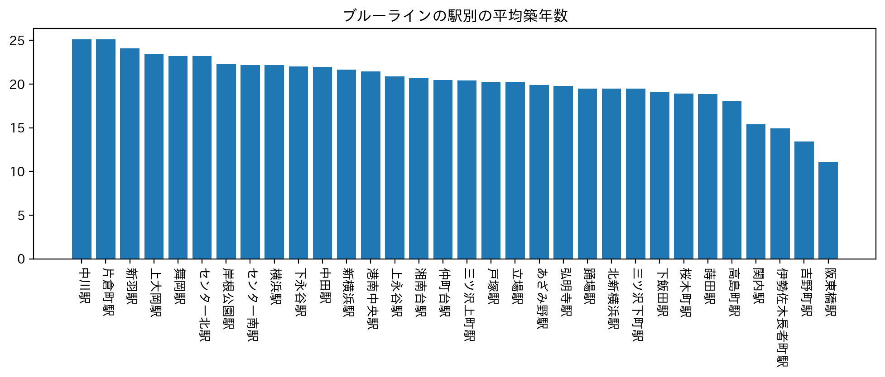
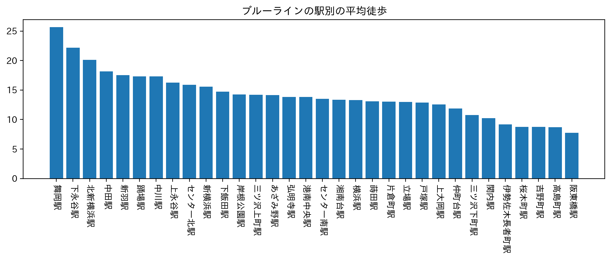

第６回
2022/11/14
はじめに
私達の班では神大生の女性が通学しやすい駅に焦点を当て築年数が浅い物件が豊富な駅と駅から物件がなるべく近い駅を物件が多い上位３路線
から絞ることにしました。
各路線から２駅ずつおすすめの駅を一人ずつ提案し次週まとめることにしました。
路線
京急本線、東急東横線、ブルーライン線
カテゴリー
築年数、徒歩時間
調査結果
 

京急本線⇒ 日ノ出町駅、黄金町駅、子安駅


東急東横線⇒東白楽駅、反町駅、横浜駅


ブルーライン線⇒阪東橋駅、吉野町駅、高島町
まとめ
今回は神奈川大学に通う女性をターゲットとしそれに合う駅をそれぞれ絞りだしました。
しかし、現実的に考えると築年数や徒歩だけで最寄り駅を決めるには後に後悔へと繋がります。
後悔しないためにも家賃や大学までの合計所要時間、近所の様子などの要素を加えると本格的なものへと変わると思います。
デザイン演習Ⅰ・Ⅱトップページ
XBPトップページ